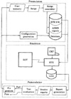
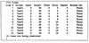
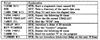

| Previous | Table of Contents | Next |
The measurement operation using an RTE consists of three phases—preemulation, emulation, and postemulation. Correspondingly, RTEs also consist of three distinct components that are used in these phases. A sample design is shown in Figure 9.5. During the preemulation phase the system configuration and script are defined. Data is collected during the emulation phase, and data reduction occurs during the postemulation phase.

FIGURE 9.5 Three components of an RTE.
Defining the system configuration includes identifying specific characteristics of the terminals, users, and their programs. Terminal characteristics include I/O speed (baud rate) of the line and whether the line is synchronous or asynchronous. User characteristics include think time (the time between successive commands) and typing rate. Load characteristics include specifying the programs and the commands that will be executed.
The users can be started in a staggered manner. If, for example, the measurements are required for 40 users, it would not be a good idea to start out with all of these users on the system at the same time. Typically, users log in in a random sequence. In order to emulate this behavior, RTEs start each user after a prespecified starting delay.
Finally, a repetition count can be specified. The experiment is repeated as specified to get a specified level of statistical confidence.

FIGURE 9.6 Sample RTE output after configuration definition phase.
A sample output from an RTE after the configuration definition phase is shown in Figure 9.6. The analyst has just defined 10 lines to be emulated. Line 1 is using the script labeled TESTI. The user is typing at a rate of 3 characters per second, and the terminal output rate is 30 characters per second. The user has a think time of 5 seconds and logs on the system immediately. The script will not be repeated again, and the think time will be randomly generated. Line 12 is similar to line 1, except that it has a different type of workload (script is TEST4) and starts 18 seconds after the first user.
The RTEs also allow the measurement of time for a particular operation, the repetition of an operation, the introduction of a random delay at any point, the enabling or disabling of a user’s thinking, and forward or backward movement in the script. In essence, RTEs have their own programming language. A sample script with explanations is shown in Figure 9.7. It contains SUT commands as well as RTE commands. The RTE commands are enclosed in the symbol \\. All characters (including carriage returns) not enclosed in \\ are sent to the SUT. An RTE may have a complete programming language defined for it and may allow commands such as GOTO, GOSUB, and PAUSE.

FIGURE 9.7 Sample RTE script with explanations.
The emulation phase is the next phase of load driving. The data related to the system, terminals, users, and the users’ workloads is input into the RTE during the preemulation phase. He experiment is then initiated. The emulation phase may continue for hours. During this phase, the operator can observe the system activities on the RTE’s operator console. The system status may be displayed, which shows the number of active lines, number of characters sent, and elasped time on each line. It is also possible to monitor a particular line and watch everything that would have been presented to a real user sitting on that line. One can ask the RTE to change the experiment by activating or deactivating particular users. (This is one reason why, in the example shown in Figure 9.6, 12 lines were defined but only 10 were activated.) Characteristics of a user, a line, or the load can be changed. If the emulation completes successfully, the next phase of data reduction is begun.
The data gathered by the RTE is stored on magtapes or removable disk media. During the third phase, this data is transferred to another computer system for reduction and analysis. The system that was used as the RTE for measurement often may not be used for data reduction and analysis. This is because the measurements must be done on a dedicated system, and the system should not be interrupted by other tasks while the measurements are being done. Dedicated systems are hard to find. Only low-cost and, therefore, low-power machines can be justified for this purpose. This is why the definition as well as the data reduction are done on timeshared systems, which are not only more powerful but also have a more user-friendly operating system than that on the more primitive RTE. The RTE’s operating system may not support all the statistical packages required for analysis.
The data reduction package that comes with an RTE supports common statistical analysis such as computing the average and standard deviation, plotting histograms, and fitting linear regressions. If the script contains time tests (stopwatches), the statistics on the time consumed are automatically presented during analysis. The analysis package may also convert the raw data into a format that can be understood by commercial statistical software for more sophisticated analysis.
| Previous | Table of Contents | Next |
){kind=link}
){kind=link}
){kind=link}
){kind=link}
){kind=link}
){kind=link}